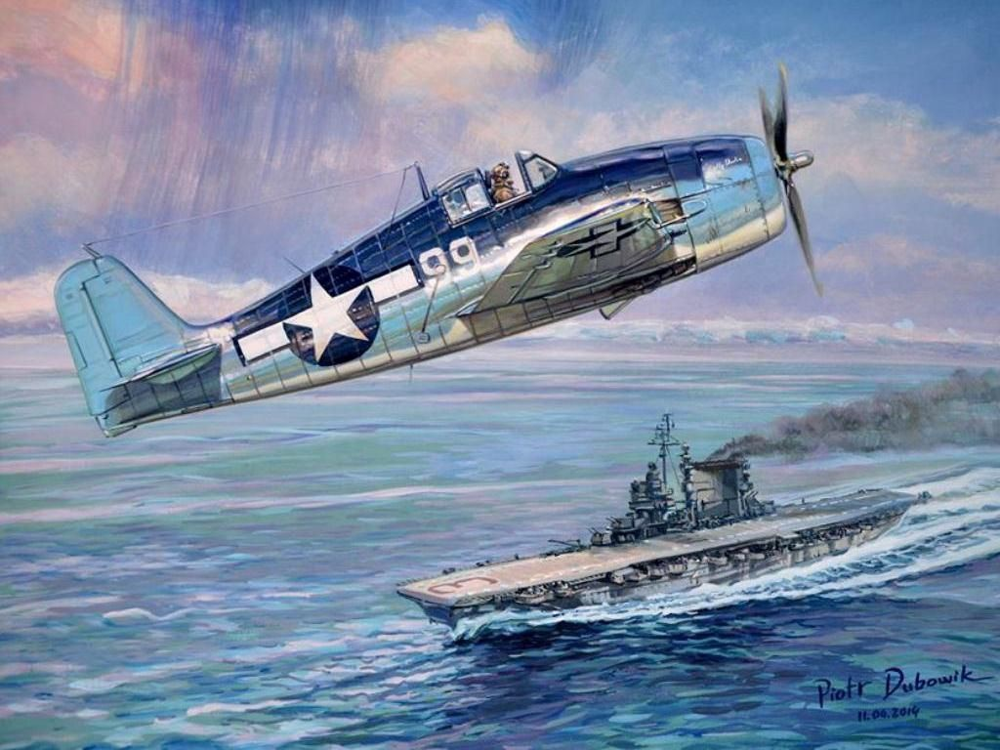
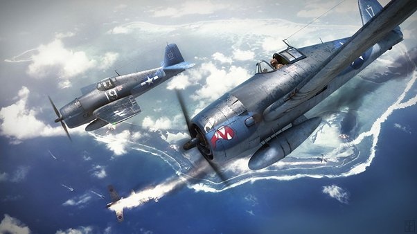
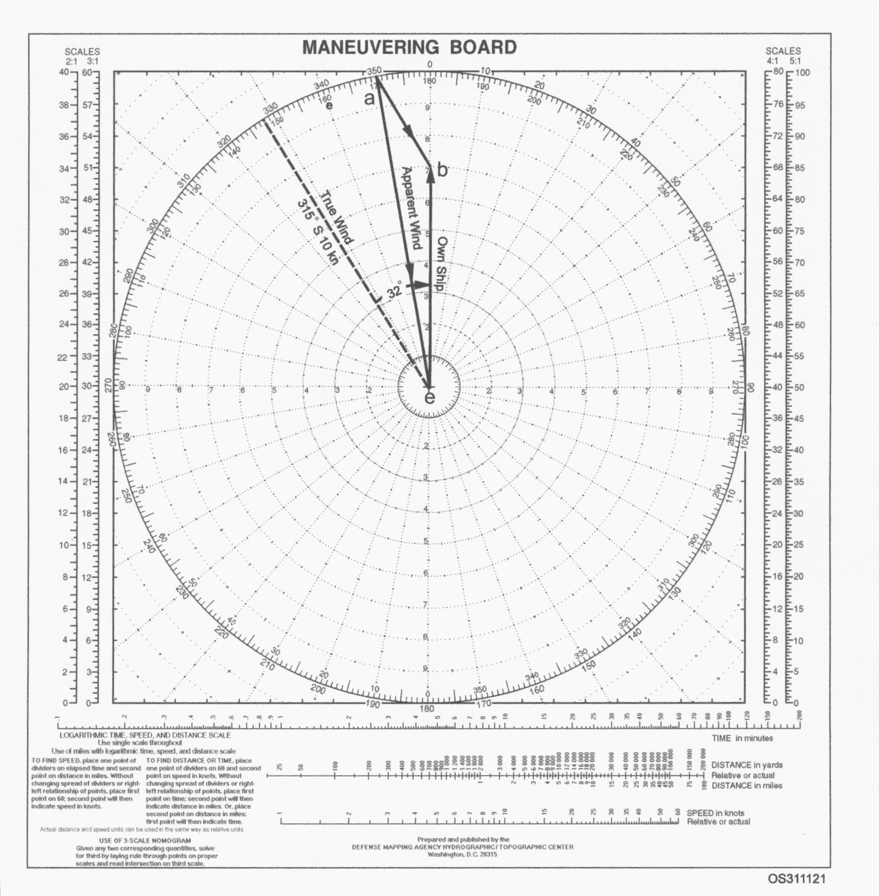

레이더 개발 이야기 (50) - 계산 연습하는 소위들
게시: 2023-10-12T06:30:23+09:00
<대체 Fighter Director Control이 뭐야?> 그리핀 소령의 Fighter Director Control 학교에 입교 명령을 받은 20여명의 신임 소위들은 매우 당혹스러워했음. 일단 Fighter Director Control이라는 것이 뭔지 아는 사람이 아무도 없었기 때문. 이들의 궁금증은 첫날 그리핀 소령이 이들에게 보안 선서를 받고 나서 설명해준 레이더라는 것을 알게 되면서 차츰 해소. 그때까지도 미군 전체에서 레이더라는 개념 자체가 군사 기밀이었던 것. 레이더 발명 이전에는 항공모함의 함재 전투기를 이용한 함대 방공의 개념이 없었나? 있긴 했는데 최소한 Fighter Director Control이라는 개념 자체는 없었음. 어차피 어느 방향에서 몇 대의 적기가 날아올지 알 수가 없었으므로, CAP (Combat Air Patrol)의 지휘는 당장 눈으로 적기를 볼 수 있는 편대장이 맡을 수 밖에 없었음. 그래서 그때까지는 항모로부터 약 40km 밖까지 CAP을 내보내 순찰을 돌게 하다가, 내습하는 적기를 운 좋게 눈으로 발견하게 되면 편대장 책임 하에 교전에 들어갔음.

(CAP을 어떻게 운용하느냐도 각국 해군마다 나름대로의 원칙이 있었음. 처음에는 떼로 몰려다니며 반지름 40km 정도의 영역을 순찰하던 미해군은 나중에 여러 개의 편대로 나누어 각자 맡은 영역을 순찰하는 것으로 바꾸었으나, 그럴 경우 전력이 더욱 분산되는 단점이 있었으므로 어느 쪽이 더 좋다고 말하기 어려웠음. 이 모든 것을 해결한 것이 레이더.)

(물론 레이더가 모든 문제를 해결해준 것은 아니었고 여전히 각국별로 다른 대응은 있었음. 영국 해군에서는 적기 공습시 만약 아군 함재기가 제때 요격에 들어갈 경우 아군 함재기 보호를 위해 대공사격을 멈추는 것이 원칙이었음. 그러나 미해군에서는 아군 함재기에게 '알아서 사정권 밖에 머물라'라고 하고는 더욱 맹렬한 대공포 사격을 계속하는 것이 원칙이었다고. 참고로 영국 해군이 자랑하던 pom-pom 대공포는 그다지 효율적이지도 않았고 사거리도 짧았음.)
그런데 그 적편대가 함대를 노리는 유일한 적기일지는 아무도 모르는 일. 그러니 4대의 적기를 발견했을 때 8대의 편대기가 전부 다 달려들어야 할지 6대만 달려들고 나머지 2대는 계속 다른 구역으로 순찰을 돌게 해야 할지 판단하기 어려웠음. 가장 곤란했던 점은 지휘관 본인이 전투를 벌어야 하는 편대 속에 들어있다보니, 전체적인 상황을 파악하기도 어려웠고 냉정한 판단을 내릴 수 없었다는 점. 하물며 적편대의 내습으로 인해 더 많은 요격기들을 긴급 발진 시켜야 하는 상황인지 판단은 더더욱 어려웠음. 적은 수의 적편대가 발견될 때마다 전체 요격기들을 우르르 긴급 발진 시키는 것은 유한한 함대 방공 자원을 낭비하는 것일 뿐만 아니라, 쓸데없이 전체 요격기들이 이함하여 공중에서 돌아다니다 별 소득없이 착함하는 순간 대규모 적기의 내습이 이루어진다면 함대를 자멸시킬 수도 있는 참사가 되기 쉽상. 그런데 레이더의 발명으로 인해, 함대의 중앙 위치에서 사방 수십 km까지의 상황을 한 눈에 보면서 요격기들을 지휘하는 Fighter Director Control이라는 새로운 보직이 생겨날 수 있게 된 것. <그냥 종이 해도 위에 그리면 되는 거 아닌가?> 당시 미해군의 CXAM 레이더도 영국 레이더와 동일하게 A-scope를 통해 알 수 있는 거리와, 목표물을 향해 다이얼을 이리저리 돌려 간신히 알아낼 수 있는 목표물의 방위각도 정도가 유일한 정보. 비슷한 방식으로 레이더 안테나를 위아래로 까딱까딱 숙여가며 목표물의 고도도 측정해볼 수 있었으나 실질적으로는 거의 무쓸모라고 미해군은 자체 평가하고 포기. 이렇게 제한된 수치 정보만으로는 도저히 머릿속에 전체적인 그림을 그리기에는 무리이므로, 이걸 시시각각 추적하며 차트 상의 위치로 표시해야 함. 그래야 목표물이 어느 방향으로 어떤 속력으로 이동하고 있는지 계산도 가능. 이걸 그냥 종이로 된 해도 위에 표시할 수도 있으나, 그게 꼭 쉽지가 않음. 이유는 바로 자기 자신, 즉 레이더를 탑재한 항모 자체가 움직이기 때문. 적기까지의 위치와 방향은 당연히 자기 항모로부터의 상대적인 거리와 방위각이었으므로 해도 상에서 자기 항모가 어떻게 움직이느냐도 함께 표시해야 하는데, 직접 해보면 알겠지만 그게 그렇게 간단한 일이 아니었음. 더군다나 이렇게 적편대의 위치를 추적하는 목적은 바로 비행 중인 아군 함재기들에게 그 위치를 알려주기 위함인데, 그냥 항모 중심으로 '방위각 몇 도로 30km'라는 식으로 알려주면 안 됨. 항모는 레이더를 통해 아군 함재기들의 위치를 파악하고 있지만 아군 함재기들은 항모의 현재 위치를 모르기 때문. 그러니 시시각각 변화하는 항모의 위치를 감안하여 지도 위에 표시를 해야 함. 그래서 사용된 것이 dead reckoning tracer (DRT). 이건 1925년에 발명된 물건인데, 원래 이름 그대로 선박에서 짙은 구름이나 안개 등으로 천문항법이 불가능하여 추측항법(dead reckoning)을 해야 할 때 배의 속도와 나침반 방위각 등을 기록해가며 배의 위치를 해도와 편리하게 비교하기 위해 만들어진 일종의 plotting box. 유리로 된 책상 크기의 상자 속에 전기 장치를 이용해 가로세로 축으로 움직이는 전구가 달린 표시자(보통 bug이라고 불렀음)가 기본 구조. 이 장치의 입력 장치에 항모의 속도와 방위각을 입력하면 bug이 전기 모터에 의해 자동으로 항모의 움직임을 반영하여 이동했음. 그러면 레이더 작도병들이 그 유리판 위에 올려진 종이 위에 그 bug의 현재 위치에 대해 레이더 상 목표물의 거리와 방위각을 표시하기만 하면 끝!

(이것이 dead reckoning tracer. 사실상 그냥 나무 판때기 하나에 각도기 팔이 하나 달린 것 뿐인 Bigsworth board 하나만 들고 모든 목표물을 추적해야 했던 영국 해군에 비하면 미해군은 모든 것이 풍요로웠음.)
<내가 이러려고 해군에 입대한 게 아닌데>
이와 함께 매우 유용했던 것이 조종사 또는 항법사가 항공기 위에서 추측항법으로 현재 위치를 측정할 때 측풍으로 인한 오차(drift)를 계산하기 위해 사용하던 maneuvering board. 이건 그냥 종이 위에 원과 함께 눈금이 매겨진 방사선을 긋고 방위각을 프린트 해놓은 폭 60cm 정도의 계산용 종이. 이걸 통해서 관제사들은 적기의 위치와 방향을 계산하고 그로부터 아군 요격기가 적기를 요격하기 위해서는 어떤 방위각으로 어떤 속도로 날아야 하는지를 재빨리 계산할 수 있었음.

( Maneuvering board. 간단한 프린트 종이에 불과하지만 일본 함재기를 격추하는데 이것처럼 요긴한 것이 없었음.)
그리핀 소령의 Fighter Director Control 학교에서는 훈련생인 소위들에게 이 maneuvering board 위에서 적기의 위치, 방위각, 속도, 그리고 아군기의 위치를 주고는 CPA (closest point of approach, 요격을 위한 최적 위치)를 계산하는 훈련을 무지하게 시켰음. 아마 용맹하고 터프한 해군 장교를 꿈꾸며 해군에 입대했던 소위들은 중학생처럼 책상에 앉아 진땀을 흘리며 종이 위에 계산을 하는 자신들의 모습을 보고 정말 자괴감이 들었을 듯. 그러나 이런 훈련 덕분에 훗날 미해군 요격기들은 신속한 요격이 가능했음. 조종사가 항모의 관제사에게 CPA를 요청한 뒤 30초 안에 답이 오지 않으면 "Radar, what’s holding you up?" (레이더, 뭐 때문에 꾸물거리나?) 라는 재촉이 날아들었다고.